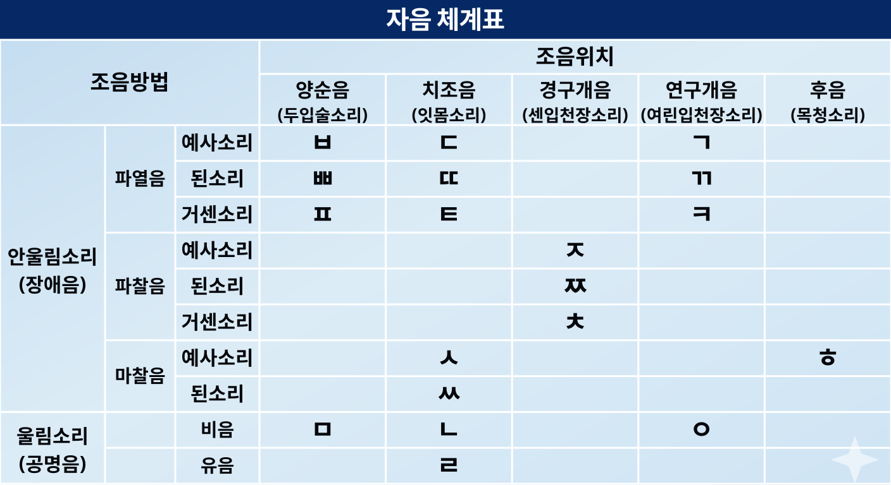

음운 기초 개념
음운이란 말의 뜻을 구별해 주는 소리의 가장 작은 단위입니다.
음운의 분류
분절 음운 (음소)
자음 (19개)
발음 기관의 공기 방해 有
모음
발음 기관의 공기 방해 無
비분절 음운 (운소)
소리의 길이, 높이, 세기, 억양 등
[말] → 馬
[말:] → 言
최소 대립쌍 & 최소 대립
최소 대립쌍 하나의 음운만 다른 단어 쌍
말 / 발
남 / 님
눈 / 눈ː
최소 대립 최소 대립쌍에서 서로 다른 음운 그 자체
ㅁ / ㅂ
ㅏ / ㅣ
장단
음운 변동의 유형
교체
A → B
한 음운이 다른 음운으로 바뀜
탈락
A → ∅
한 음운이 없어짐
첨가
∅ → A
없던 음운이 생김
축약
A + B → C
두 음운이 합쳐져 하나가 됨
자음 체계 (19개)
소리를 낼 때 공기의 흐름이 발음 기관의 장애를 받는 소리

※ ㅎ은 평음 또는 경음으로 분류. 구분(×)
모음 체계
단모음 체계도 (10개)
| 혀의 높이 | 전설 모음 | 후설 모음 | ||
|---|---|---|---|---|
| 평순 | 원순 | 평순 | 원순 | |
| 고모음 | ㅣ | ㅟ | ㅡ | ㅜ |
| 중모음 | ㅔ | ㅚ | ㅓ | ㅗ |
| 저모음 | ㅐ | ㅏ | ||
반모음과 이중모음
반모음 (혼자 쓰일 수 없음)
'ㅣ' 계열 [j]
ㅑ, ㅕ, ㅛ, ㅠ, ㅒ, ㅖ, ㅘ(+)
'ㅗ/ㅜ' 계열 [w]
ㅘ, ㅙ, ㅝ, ㅞ
이중모음
반모음 + 단모음의 결합
ex) ㅘ = [w] + ㅏ
모음 조화
양성끼리, 음성끼리 어울리는 경향. 현대 국어에서는 100% 지켜지지 않음.
양성 모음
ㅏ, ㅗ — 밝고 가벼운 느낌ex) 찰랑찰랑, -아/-아서
음성 모음
나머지 — 어둡고 무거운 느낌ex) 출렁출렁, -어/-어서
형태소 & 단어
형태소의 분류
실질 형태소
의미 有
실질적 의미를 가짐
형식 형태소
의미 無
조사, 어미, 접사 — 문법적 기능
자립 형태소
혼자 쓰임
체언, 수식언, 독립언 등
의존 형태소
혼자 불가
= 형식 형태소 + 어근
예시 분석: 철수가 밥을 먹었다
철수
자립·실질
가
의존·형식
(주격조사)
(주격조사)
+
밥
자립·실질
을
의존·형식
(목적격조사)
(목적격조사)
+
먹
의존·실질
(어근)
(어근)
었
의존·형식
(과거시제 선어말어미)
(과거시제 선어말어미)
다
의존·형식
(어말어미)
(어말어미)
주격 조사 & 선어말 어미
주격 조사
이
가
께서
선어말 어미
높임: -시-, -으시-
겸손: -옵-, -사옵-
시제 선어말 어미
과거
-았-, -었-, -였-
현재
-ㄴ-
미래
-겠-
어간 / 어근 / 단어 구조
어간
어근 + 접사 / 활용 때 형태 변화
어미
활용 때 변화 無
단일어
어근 1개
합성어
어근 + 어근 (ex. 종이컵)
파생어
접사 + 어근 (ex. 맨발)
※ 용언에서 접사가 없을 때 → 어간 = 어근
음운의 교체 (A → B)
① 비음화
파열음 ㄱ, ㄷ, ㅂ이 비음 ㄴ, ㅁ 앞에서 [ㅇ, ㄴ, ㅁ]이 됨
국물 →[궁물]
닫는 →[단는]
잡내 →[잠내]
먹는 →[멍는]
앞날 →[암날]
읽는 →[잉는]
옆문 →[염문]
박만 →[방만]
섭니다 →[섬니다]
깎는 →[깡는]
+ ㄹ의 비음화
i) 유음 ㄹ이 파열음 ㄱ, ㄷ, ㅂ 뒤에서 [ㄴ]이 됨 → 이후 비음화
섭리 →[섬니]
협력 →[혐녁]
독립 →[동닙]
법령 →[범녕]
압력 →[암녁]
ii) 유음 ㄹ이 ㅁ, ㅇ 뒤에서 [ㄴ]이 됨
종로 →[종노]
백로 →[뱅노]
식량 →[싱냥]
대통령 →[대통녕]
② 유음화
ㄴ이 ㄹ의 앞이나 뒤에서 [ㄹ]이 됨
순행 (ㄹ → ㄴ 영향)
실내 →[실래]
줄넘기 →[줄럼기]
물난리 →[물랄리]
역행 (ㄴ ← ㄹ 영향)
논란 →[놀란]
신라 →[실라]
천리 →[철리]
난로 →[날로]
분리 →[불리]
권리 →[궐리]
근로 →[글로]
예외 (유음화 ✗)
의견란[의견난] / 임진란[임진난] / 생산량[생산냥] / 결단력[결단녁] / 공권력[공권녁] / 횡단로[횡단노] / 입원료[이붠뇨]
의견란[의견난] / 임진란[임진난] / 생산량[생산냥] / 결단력[결단녁] / 공권력[공권녁] / 횡단로[횡단노] / 입원료[이붠뇨]
③ (경)구개음화
치조음 ㄷ, ㅌ이 모음 ㅣ나 반모음 [j]로 시작되는 형식 형태소를 만나 경구개음 [ㅈ, ㅊ]이 됨
⚠ 반드시 형식 형태소(ㅑ,ㅕ,ㅛ,ㅠ,ㅒ,ㅖ,ㅣ 등) 앞에서만 일어남
해돋이 →[해도지]
굳이 →[구지]
같이 →[가치]
끝이 →[끄치]
맏이 →[마지]
붙이다 →[부치다]
밭이 →[바치]
낱낱이 →[난나치]
곧이 →[고지]
벼훑이 →[벼훌치]
④ 된소리되기 (경음화)
i) 파열음 ㄱ, ㄷ, ㅂ 뒤에 ㄱ, ㄷ, ㅂ, ㅅ, ㅈ이 올 때
국밥 →[국빱]
닭장 →[닥짱]
책상 →[책쌍]
입술 →[입쑬]
옷감 →[옫깜]
깎다 →[깍따]
읽지 →[익찌]
섞다 →[석따]
넓다 →[널따]
넋두리 →[넉뚜리]
ii) 어간의 받침 ㄴ, ㅁ 뒤에 첫소리 ㄱ, ㄷ, ㅅ, ㅈ인 어미가 올 때
감다 →[감따]
담고 →[담꼬]
신다 →[신따]
안고 →[안꼬]
참고 →[참꼬]
검다 →[검따]
남기다 →[남끼다]
앉다 →[안따]
삼다 →[삼따]
넘다 →[넘따]
iii) 한자어에서 ㄹ 받침 뒤에 ㄷ, ㅅ, ㅈ이 올 때
갈등 →[갈뜽]
발전 →[발쩐]
물질 →[물찔]
솔직 →[솔찍]
결심 →[결씸]
말살 →[말쌀]
열정 →[열쩡]
절도 →[절또]
일정 →[일쩡]
출발 →[출빨]
iv) 관형사형 어미 -(으)ㄴ, -는, -(으)ㄹ, -을 뒤에 ㄱ, ㄷ, ㅂ, ㅅ, ㅈ이 올 때
갈 것 →[갈껏]
할 수 →[할쑤]
갈 데 →[갈떼]
볼 사람 →[볼싸람]
할 바 →[할빠]
갈 곳 →[갈꼳]
먹을 것 →[머글껏]
찾을 수 →[차즐쑤]
들을 기회 →[드를끼회]
읽을 자료 →[일글짜료]
⑤ 모음 교체 (반모음화)
ㅣ, ㅗ, ㅜ가 ㅏ, ㅓ를 만나 반모음이 됨
피+어 →펴
지+어 →져
기+어 →겨
오+아 →와
두+어 →둬
쏘+아 →쏴
되+어 →돼
이기+어 →이겨
주+어 →줘
보+아 →봐
음운의 탈락 (A → ∅)
① 자음 탈락
i) ㅎ 탈락 — ㅎ 뒤에 모음이 올 경우 발음만 탈락
쌓이다 →[싸이다]
놓아 →[노아]
좋아 →[조아]
많아 →[마나]
닳아 →[다라]
싫어 →[시러]
넣어 →[너어]
끊어 →[끄너]
앓아 →[아라]
옳아 →[오라]
ii) ㄹ 탈락 — ㄹ 뒤에 ㄴ, ㅂ, ㅅ이 올 경우 발음+표기 탈락
달님 →따님
알+니 →아니
살+니 →사니
울+니 →우니
갈+세요 →가세요
알+세요 →아세요
팔+세요 →파세요
놀+니 →노니
갈+ㄴ →가는
② 겹받침 탈락 (자음군 단순화)
i) ㅄ, ㄳ, ㄵ, ㄼ, ㄽ, ㄾ, ㄻ, ㄿ → 뒷 자음 탈락
없다 →[업따]
넋 →[넉]
앉다 →[안따]
젊다 →[점따]
읊다 →[읍따]
예외 ① 밟다 → [밟따]
예외 ② 넓죽하다, 넓둥글다, 넓적하다 → [넙-]으로 발음
예외 ② 넓죽하다, 넓둥글다, 넓적하다 → [넙-]으로 발음
ii) ㄺ, ㄻ, ㄿ → 앞 자음 탈락
닭 →[닥]
삶 →[삼]
흙 →[흑]
긁다 →[극따]
훑다 →[훌따]
예외: ㄺ+ㄱ → 앞 자음 유지 ex) 읽고 → [일꼬]
③ 모음 탈락
i) 'ㅡ' 탈락 : 어간 끝 'ㅡ'가 ㅏ/ㅓ로 시작하는 어미 앞에서 탈락
따르+아 →따라
쓰+이 →써
크+어 →커
모으+아 →모아
잠그+아 →잠가
바쁘+아 →바빠
나쁘+아 →나빠
슬프+어 →슬퍼
고프+아 →고파
아프+아 →아파
ii) 동음 탈락 : 어간 끝 ㅏ/ㅓ가 ㅏ/ㅓ로 시작하는 어미 앞에서 탈락 (모음 조화 필수)
가+아서 →가서
서+어서 →서서
사+아서 →사서
타+아 →타
자+아 →자
차+아 →차
나+아서 →나서
가+아 →가
서+어 →서
펴+어 →펴
음운의 첨가 (∅ → A)
① ㄴ 첨가 (합성어 / 파생어)
받침 자음 + 이, 야, 여, 요, 유 → [니, 냐, 녀, 뇨, 뉴]
솜이불 →[솜니불]
홑이불 →[혼니불]
색연필 →[생년필]
식용유 →[싱뇽뉴]
꽃잎 →[꼰닙]
막일 →[망닐]
국요리 →[궁뇨리]
늑막염 →[능망념]
직행열차 →[지캥녈차]
옷요 →[온뇨]
② 사잇소리 현상 (합성어) — 예외 多
앞 또는 뒤에 공명음(ㅁ, ㄴ, ㅇ, ㄹ + 모음)이 올 경우 사이시옷 표기
i) 모음 끝 + 예사소리 시작 → ㅅ 첨가 (된소리 발음)
코+등 →콧등[코뜽]
배+사공 →뱃사공[배싸공]
나무+가지 →나뭇가지[나무까지]
해+빛 →햇빛[해삗]
아래+집 →아랫집[아래찝]
초+불 →촛불[초뿔]
나루+배 →나룻배[나루빼]
귀+병 →귓병[귀뼝]
ii) 모음 끝 + ㅁ, ㄴ → ㄴ 덧남 (비음화)
시내+물 →시냇물[시낸물]
아래+마을 →아랫마을[아랜마을]
코+날 →콧날[콘날]
빗+물 →빗물[빈물]
잇+몸 →잇몸[인몸]
깻+묵 →깻묵[깬묵]
뒷+문 →뒷문[뒨문]
햇+무리 →햇무리[핸무리]
iii) 모음 끝 + ㅣ 또는 [j] → ㄴㄴ 덧남
나무+잎 →나뭇잎[나문닙]
뒤+일 →뒷일[뒨닐]
훗+일 →훗일[훈닐]
깻+잎 →깻잎[깬닙]
아랫+니 →아랫니[아랜니]
윗+니 →윗니[윈니]
예삿+일 →예삿일[예산닐]
베갯+잇 →베갯잇[베갠닏]
iv) 한자 합성어 6개 (예외 無)
곳간
셋방
숫자
찻간
툇간
횟수
v) 자음 끝 + 예사소리 시작 → 된소리 발음
눈사람 →[눈싸람]
문고리 →[문꼬리]
길가 →[길까]
봄비 →[봄삐]
손등 →[손뜽]
밤새 →[밤쌔]
불빛 →[불삣]
강가 →[강까]
발걸음 →[발꺼름]
산길 →[산낄]
③ 반모음 첨가 (∅ → A)
모음 ㅣ로 끝나는 어간 + -어
→ [어]: 원칙 | [여]: 허용 (반모음 첨가)
→ [어]: 원칙 | [여]: 허용 (반모음 첨가)
피+어 →피어 / 펴
지+어 →지어 / 져
기+어 →기어 / 겨
이기+어 →이기어 / 이겨
끼+어 →끼어 / 껴
비비+어 →비비어 / 비벼
-이오, -아니오 → [이요, 아니요] 허용
cf) 아니오 (감탄사+보조사) ↔ 예
cf) 아니오 (감탄사+보조사) ↔ 예
자투리 개념 모음
받침의 발음 — 음절 끝소리 규칙 (7대 표음)
받침은 음절 끝에서 반드시 ㄱ, ㄴ, ㄷ, ㄹ, ㅁ, ㅂ, ㅇ 7개 중 하나로만 발음됨
낫, 낮, 낚, 날 →[낟]
부엌 →[부억]
무릎 →[무릅]
히읗 →[히읃]
솥 →[솓]
밖 →[박]
숲 →[숩]
꽃 →[꼳]
형식 형태소 vs 실질 형태소
낫이 → [나시] (형식 형태소, 음절 끝소리 규칙 미적용)
낫 안 → [낟안] (실질 형태소, 음절 끝소리 규칙 적용)
낫이 → [나시] (형식 형태소, 음절 끝소리 규칙 미적용)
낫 안 → [낟안] (실질 형태소, 음절 끝소리 규칙 적용)
어간 / 어근 개념 정리
어근
단어의 실질적 의미 부분
접사
접두사 + 접미사
어간
어근 + 접사 (활용 때 변화 無)
어미
활용 때 변화
예시 : 치솟다
치
접사
솟
어근
다
어미
어간 = 치솟 (접사+어근)
용언에서 접사가 없을 때 → 어간 = 어근
🎯 모의고사 기출 예시 분석
① 밭이랑 논 → [바치랑]
이랑: 접속조사 → 형식 형태소
밭 + 이랑(형식) → 구개음화 발생: ㄷ + ㅣ → [ㅈ] → [바치랑]
② 밭이랑에 가다 (실질 형태소)
단계별 음운 변동 분석
밭이랑
→ 음절끝소리규칙 →
[밭이랑]
→ ㄴ 첨가 →
[받니랑]
→ 비음화 →
[반니랑]